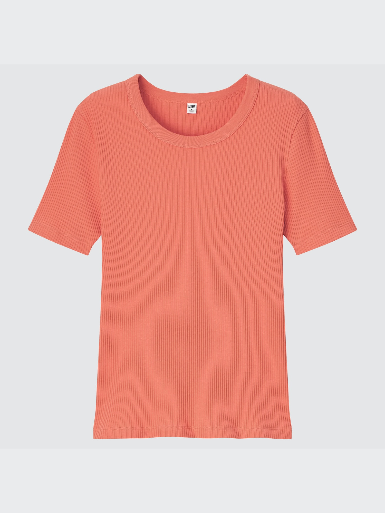

Ribbed Short Sleeve T-shirt
$5.00 $12.90 original price
- Brand
- Uniqlo
- Size
- M
- Materials
- 93% cotton, 7% spandex
- Condition
- Excellent
Fitted crew-neck tee in fine ribbed cotton, with a slightly longer sleeve length and a wide neckband. In orange.